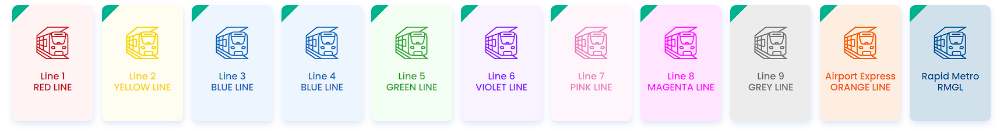

"DELHI METRO RAIL CORPORATION LTD."

The Delhi Metro, operated by the Delhi Metro Rail Corporation (DMRC), spans over 390 kilometers with 11
color-coded lines, connecting various parts of Delhi and the National Capital Region (NCR), providing reliable
and efficient transportation for millions of daily commuters.
1. Red Line
- Route: Rithala to Shaheed Sthal (New Bus Adda)
- Length: 34.69 km
- Stations: 29
- Key Interchange: Kashmere Gate
2. Yellow Line
- Route: Samaypur Badli to HUDA City Centre
- Length: 49.31 km
- Stations: 37
- Key Interchanges: Rajiv Chowk, Central Secretariat, Hauz Khas
3. Blue Line
- Route: Samaypur Badli to HUDA City Centre
- Length: 56.61 km
- Stations: 50
- Key Interchanges: Yamuna Bank, Rajiv Chowk
4. Green Line
- Route: Inderlok/Kirti Nagar to Brigadier Hoshiyar Singh
- Length: 29.64 km
- Stations: 23
- Key Interchanges: Inderlok, Kirti Nagar
5. Voilet Line
- Route: Kashmere Gate to Raja Nahar Singh (Ballabhgarh)
- Length: 47.33 km
- Stations: 34
- Key Interchanges:Kashmere Gate, Central Secretariat
6. Orange Line (Airport Express Line)
- Route: New Delhi to Dwarka Sector 21
- Length: 22.7 km
- Stations: 6
- Key Interchanges: New Delhi, Dwarka Sector 21
7. Pink Line
- Route: Majlis Park to Shiv Vihar
- Length: 58.59 km
- Stations: 38
- Key Interchanges: Rajouri Garden, INA, Lajpat Nagar
8. Magenta Line
- Route: Janakpuri West to Botanical Garden
- Length: 38.23 km
- Stations: 25
- Key Interchanges: Hauz Khas, Janakpuri West
9. Gray Line
- Route: Dwarka to Najafgarh
- Length: 4.29 km
- Stations: 3
- Key Interchanges: Dwarka
10. Aqua Line
- Route: Sector 51 (Noida) to Depot Station (Greater Noida)
- Length: 29.7 km
- Stations: 21
- Key Interchanges: Sector 52
11. Rapid Metro
- Route: Sikanderpur to Sector 55-56 (Gurgaon)
- Length: 11.7 km
- Stations: 11
- Key Interchanges: Sikanderpur
Integration and Connectivity
Delhi Metro lines are interconnected, enabling seamless transitions and integration with buses, rickshaws, and
feeder services for last-mile connectivity.
Future Expansions
DMRC plans to extend existing lines and introduce new ones to improve connectivity, particularly in underserved
areas.
Conclusion
Delhi Metro’s extensive network ensures comprehensive coverage of Delhi and its neighboring regions, making it an
indispensable part of the city’s urban transport infrastructure.